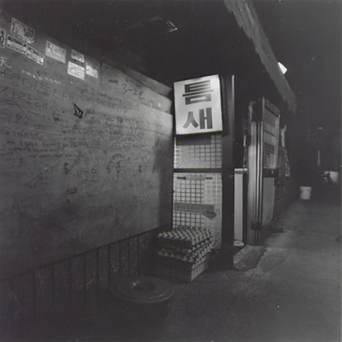

home > 사업소개 > 회사소개
틈새를 말하다
대한민국 매운 라면의 원조
틈새라면은 라면을 팔지 않습니다 브랜드를 팝니다.
대한민국 최고의 브랜드를 만들기 위해 노력했습니다.
틈새에 오시면 틈새의 독특한 맛, 문화, 사람이 있습니다.
-

- 틈새의 시작
- 1981년 명동의 그야말로 틈새에서 시작한 틈새라면은
이제 새로운 프랜차이즈 사업을 시작한 43살 청년입니다.
틈새의 가족인 단골들이 머리를 맞대고 지어준 틈새라면의
간판을 마음에 달던 날과 같은 설레임과 틈새가족의 사랑에
보답하고자 하는 긴장감을 느낍니다.
-
- 틈새비전
- "틈새라면"은 라면을 팔지않습니다 브랜드를 팝니다.
틈새라면은 새로운 가족을 위해 43년의 정성을 모아
“가족형 프랜차이즈” 사업을 시작하였습니다.
틈새만의 문화를 이어가는 것, 그것은 지난 시간동안
틈새와 함께해준 믿음을 지키는 일입니다.
-
- 틈새목표
- 틈새는 100년을 바라봅니다 틈새는 사람을 남깁니다.
진정한 장인정신을 바탕으로 하여 라면에 대한 애정을
가지고 한길을 묵묵히 걸어가는 그런 사람들을 남깁니다.
잊혀진 한국만의 서비스 정신을 세계화합니다.
문화를 전파합니다. 이 모든 틈새의 꿈은
틈새 가족과 함께 할 것입니다.